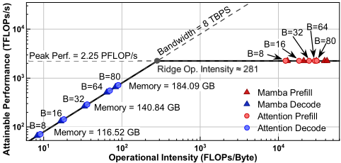
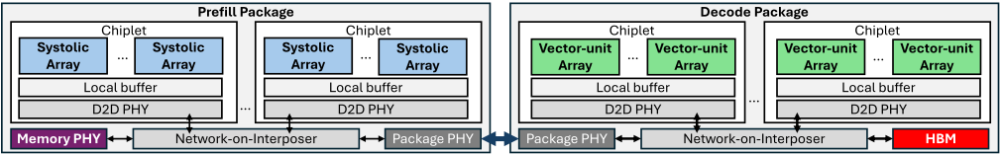
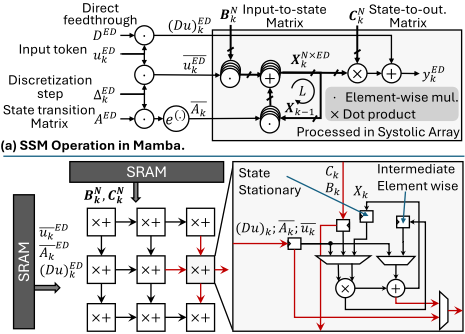
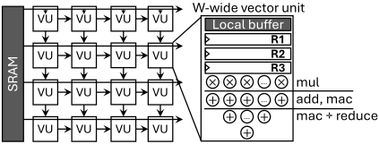
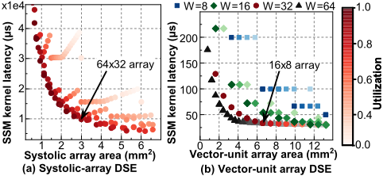
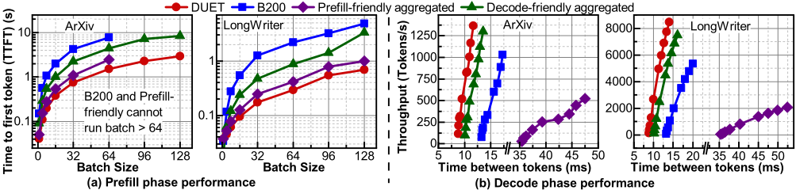

DUET：采用 Prefill 与 Decode 专用封装的解耦式混合 Mamba-Transformer LLM 加速架构
LLM 推理的 prefill 阶段 compute-bound、decode 阶段 bandwidth-bound，混合 Mamba-Transformer 模型中 SSM 的递归依赖与逐元素运算在以 matmul 为中心的同构 GPU 上映射低效，单一同构架构无法同时优化两个 phase。DUET 提出 chiplet 化双封装解耦架构：Prefill 封装用 systolic array chiplet 搭配 off-package GDDR7，借助 state-stationary 数据流与代数重排序统一执行 GEMM 与长序列 SSM；Decode 封装用 vector-unit array chiplet 搭配 in-package HBM3e，以 token-by-token 方式执行 SSM 与 GEMV；两类阵列均运行时可配置以支持 Mamba/attention 混合层。在 Nemotron-H-56B、Zamba2-7B、Llama3-8B 上，相比 B200 GPU 取得 4× TTFT 降低、1.4× 吞吐提升与 1.5× TBT 降低。阵列以 SystemVerilog 实现并在 TSMC 28nm 综合（最高 763 MHz），系统级结论来自经 RTL 校准的 cycle-accurate simulator。
LLM 推理存在 prefill（compute-bound、高度并行）与 decode（memory bandwidth-bound、因 KV cache 访问而串行）的固有不对称；混合 Mamba-Transformer 模型在继承该不对称的同时，引入 SSM 递归依赖与逐元素操作，在 matmul-centric 的同构加速器上映射低效，导致 prefill 阶段浪费内存带宽、decode 阶段浪费算力。现有软件层 prefill/decode 分离方案（如 DistServe、Mooncake）仍受限于同构 GPU，需要硬件级的 phase 专用解耦架构。
提出 chiplet-based 双封装解耦框架 DUET。Prefill 封装：16 个 compute chiplet（各含 192 个 64×32 systolic array）通过 NoI 互连，12 个 memory-PHY chiplet 接 24 组 off-package GDDR7；在 PE 中增加两个 SSM 专用寄存器与轻量控制逻辑，实现 state-stationary 数据流，将递归状态保持在 PE 内、逐元素中间值 in-place 消费以消除 SRAM 读写；采用代数重排序 (Δk·Bk)uk → (Δk·uk)Bk 减少向量乘；GEMM 模式下 SSM 寄存器 clock-gated，性能与常规 systolic array 一致，模式切换由 controller mode bits 控制。Decode 封装：8 个 vector-unit chiplet 与 12 组 in-package HBM3e 在 interposer 上交错布局，每个 vector unit 含 MAC+reduction 数据通路与中间值寄存器，dot product 采用 O(logN) tree reduction，SSM 与 GEMV 共用同一数据通路。封装间经 NVLink/UALink 传输 activations 与 KV/SSM state cache，cache 传输与下一层计算重叠。基于 roofline 分析与 DSE（Pareto 前沿）确定阵列规模，系统评估采用经 RTL 校准的 cycle-accurate simulator 加 Ramulator/CACTI 建模。
相对 NVIDIA B200 GPU：TTFT 降低 4×，吞吐提升 1.4×，TBT 降低 1.5×（Nemotron-H-56B、Zamba2-7B、Llama3-8B 跨四种 workload 的几何平均）
相对 B200/prefill-friendly/decode-friendly 三种基线：TTFT 分别降低 4×/1.4×/2.7×，decode 吞吐分别提升 1.4×/3.3×/1.1×，TBT 分别降低 1.5×/4×/1.2×（几何平均）
ArXiv workload 上 Nemotron-H-56B 的 TTFT 比 B200 低 5.9×，比 prefill-friendly 与 decode-friendly 配置分别低 1.6× 与 2.9×；LongWriter 上 TTFT 比 baselines 低 1.1–6.7×，decode 吞吐高 1.1–3.9×
DSE 选型：Prefill 采用 64×32 systolic array，Decode 采用 16×8 阵列、向量宽度 W=32
TSMC 28nm 综合：systolic array 面积 3.01 mm²、功耗 935 mW；vector-unit array 面积 6.61 mm²、功耗 3446 mW；两阵列最高频率 763 MHz，设计采用 700 MHz
Prefill 封装：16 个 compute chiplet（4×4 网格）+ 24 组 off-package GDDR7（共 192 GB）；Decode 封装：8 个 vector-unit chiplet + 12 组 in-package HBM3e，D2D 链路 1024 GB/s
SSM prefill 数据流在初始 O(N) pipeline fill 后每 3 周期完成一次 SSM 更新
与 DistServe/Mooncake 等软件层 prefill-decode 分离（仍用同构 GPU）不同，DUET 在硬件层为两个 phase 分别构建专用封装；与 SPAD（仅面向 Transformer、monolithic 不可扩展）不同，DUET 面向 hybrid Mamba-Transformer 且基于 chiplet 实现模块化扩展；与 MARCA/EpochCore 等统一矩阵乘+SSM 单元以及 LightMamba/FastMamba 等专用 SSM 加速器不同，DUET 同时解决 prefill/decode 的 compute-memory 不对称与 SSM/attention 混合执行问题，通过 in-situ fusion 消除 SSM 逐元素中间值的冗余读写，且 systolic 与 vector-unit 阵列均 runtime-configurable。
相关度级别：medium
命中能力域：2.1 IP 架构与微架构
理由：论文核心贡献是 LLM 推理加速器的微架构（systolic/vector-unit 阵列与 SSM 数据流映射），不属于团队 memory/interconnect IP 的直接交付内容；但其系统级架构决策深度依赖团队产品域：Decode 封装选择 in-package HBM3e、Prefill 封装选择 off-package GDDR7、D2D PHY 按 256/1024 GB/s 配置、封装间用 NVLink/UALink 传输 KV/SSM state cache，正是 HBM/UCIe 类 IP 的需求侧典型场景；其 roofline 分析 + 经 RTL 校准的 cycle-accurate simulator + CACTI/Ramulator 建模流程与 2.1 域的 workload-driven 性能建模与 chiplet/多 die 集成架构方法学同构，可为 IP 架构定义与 PPA 权衡提供需求侧输入，但不直接命中团队 RTL/验证/形式化等技术栈，故判为 medium。
建议动作：作为方法参考存档
arXiv:2603.15530v1 [cs.AR] 2026年3月16日
DUET：采用预填充与解码专用封装的解耦式混合 Mamba-Transformer 大语言模型
Alish Kanani 1 , Sangwan Lee 2 , Han Lyu 1 , Jiahao Lin 1 , Jaehyun Park 2 , Umit Y. Ogras 1
1 威斯康星大学麦迪逊分校 2 蔚山大学
{ahkanani,hlyu42,jlin445,uogras}@wisc.edu,{lso500,jaehyun}@ulsan.ac.kr

在使用不同内核时，Mamba 层与注意力层在预填充（prefill）和解码（decode）阶段均表现出相近的运算强度，如图 1 所示。预填充落在计算受限区域，而解码即使在批大小为 80（此时已消耗约 184 GB）的情况下仍然受带宽限制。这些结果带来了两个关键洞察：（1）预填充和解码需要面向特定阶段的专用硬件；（2）由于混合模型会交替使用状态空间模型（SSM）与注意力机制，每个阶段都必须高效地同时支持 SSM 内核和注意力内核。这些结果，再加上在以矩阵乘（matmul）为中心的 GPU 上映射 SSM 递归计算的低效性，凸显了对能够同时应对计算、内存与内核多样性的解耦式硬件的需求。
为了同时解决混合模型中预填充与解码阶段的瓶颈，我们提出了 DUET，这是一种解耦式加速框架，可针对预填充和解码操作的特定需求定制硬件。对于计算受限的预填充阶段，它采用基于脉动阵列（systolic array）的芯粒（chiplet）并搭配封装外存储器，以执行大规模矩阵-矩阵（GEMM）运算。对于由矩阵-向量（GEMV）运算主导、受内存带宽限制的解码阶段，它采用基于向量单元阵列的芯粒，并耦合封装内高带宽存储器（HBM）。尽管脉动阵列和向量单元分别非常适合 GEMM 和 GEMV 乘法，但 SSM 引入了递归依赖和逐元素运算，使其难以被直接映射。DUET 通过新颖的微架构扩展来应对这一挑战，使脉动阵列能够高效处理长序列 SSM，同时保持其在标准 GEMM 乘法上的效率。它还扩展了向量单元，使其支持逐 token 的 SSM 执行，同时不降低其在 GEMV 乘法上的效率。由于混合大语言模型（LLM）会交替使用 SSM 模块与注意力模块，所提出的脉动阵列和向量单元阵列架构支持运行时配置。总而言之，DUET 框架从系统层面（解耦式预填充-解码加速）和电路层面（可配置微架构）两方面推进了面向新兴混合 LLM 高效推理的设计方法学。
大语言模型（LLM）的运行包含两个截然不同的阶段：先是计算受限的预填充（prefill）阶段，随后是内存带宽受限的解码（decode）阶段。混合 Mamba-Transformer 模型继承了这种不对称性，同时引入了状态空间模型（SSM）递推和逐元素操作，而这些操作难以高效映射到以矩阵乘法（matmul）为中心的加速器上。这种失配造成了性能瓶颈，表明同构架构无法满足所有需求。我们提出 DUET，一种解耦式加速器，它将预填充和解码阶段分配给各自专用的封装。预填充封装采用带封装外存储器的脉动阵列芯粒，以高效执行大型矩阵乘法和长序列 SSM。解码封装采用带高带宽封装内存储器的向量单元阵列，以加速逐 token 的 SSM 和向量-矩阵乘法。两种架构均支持运行时配置，以支持同时混合 Mamba 层与注意力层的混合模型。在 Nemotron-H-56B、Zamba2-7B 和 Llama3-8B 上跨四种工作负载的评估表明，与 B200 GPU 相比，DUET 实现了 4 倍的首 token 时间（time to first token）加速、1.4 倍的吞吐量提升，以及 1.5 倍的 token 间隔时间降低。
自回归大语言模型（LLM）已成为各类应用的基础，然而其推理流水线仍然存在根本性的不对称问题。预填充（prefill，提示词处理）阶段是计算受限且高度并行的，而解码（decode，token 生成）阶段则受内存带宽限制，并且由于密集的键值（KV）缓存访问而本质上是串行的。现代 LLM 服务框架注意到了这种不对称性，通常将预填充和解码分配给不同的 GPU [33, 47]。然而，这些框架仍然局限于同构 GPU，无法充分利用各阶段截然不同的特性。其结果是，预填充阶段仍然未能充分利用内存带宽，而解码阶段则未能充分利用计算单元。这种持续存在的不匹配催生了硬件级的解耦（disaggregation），即让每个阶段在针对其主导瓶颈专门定制的封装（package）上执行。
这一挑战在新兴的混合 Mamba-Transformer 架构中依然存在。混合模型结合了状态空间模型（SSM）与自注意力机制二者的互补优势 [5, 13, 27, 29]。SSM 借助固定大小的状态表示提供高效的线性时间计算，而注意力机制则擅长长程上下文检索。尽管如此，它们在推理时仍是自回归的，并保留了相同的计算受限预填充阶段，其后是串行的、内存带宽受限的解码阶段。
我们对 Nemotron-H-56B [5] 进行的 roofline 分析量化了 Mamba 层与注意力层中存在的这种不对称性。我们在 4K 上下文长度下对每层的计算量与内存流量进行建模，并将由此得到的操作强度（每字节 FLOP 数）投影到 NVIDIA Blackwell B200 GPU [9] 的 FP16 roofline 上。尽管 DUET 框架支持面向 Prefill 和 Decode 封装的广泛硬件配置。我们首先针对脉动阵列与向量单元阵列开展全面的设计空间探索，以确定 Pareto 最优配置。随后，我们构建了一个具体的 DUET 系统，对性能与面积之间的权衡进行协同优化。我们在 ArXiv、BWB、LongWriter 和 Chat 推理工作负载上，使用两个混合模型（Nemotron-H-56B [5] 与 Zamba2-7B [12]）以及一个纯 Transformer 模型（Llama3-8B [14]）对该 DUET 系统进行评估。我们将 DUET 与 NVIDIA 的 B200 [9] 以及两个聚合式基线进行比较：一个是采用封装外内存的 Prefill 友好型系统，另一个是采用封装内高带宽存储器（HBM）的 Decode 友好型系统。在所有工作负载上，DUET 始终优于所有基线：在预填充阶段将首 token 时间（Time-to-First-Token, TTFT）分别降低 4 倍、1.4 倍和 2.7 倍，将解码吞吐量分别提升 1.4 倍、3.3 倍和 1.1 倍，同时将 token 间隔时间（TimeBetween-Token, TBT）分别降低 1.5 倍、4 倍和 1.2 倍。这些结果凸显了所提出的解耦架构的实用性与高效性。本工作的主要贡献如下：
Alish Kanani 1, Sangwan Lee 2, Han Lyu 1, Jiahao Lin 1, Jaehyun Park 2, Umit Y. Ogras 1
面向可配置脉动阵列与向量单元阵列的周期精确仿真器可在 https://github.com/AlishKanani/DUET 获取。
Disaggregated inference frameworks, such as DistServe [47] and Mooncake [33], separate the two phases across different GPUs. While this approach improves TTFT for prefill and throughput for decode, both phases still rely on identical GPUs , leading to underutilized memory bandwidth during prefill and idle compute units during decode. This inefficiency motivates hardware-level disaggregation, where each phase is mapped to a GPU optimized for its dominant bottleneck. SPAD introduces distinct prefill and decode chips, reporting cost advantages over GPUs [44]. However, it targets only Transformer workloads and retains a monolithic design, which is not scalable, as summarized in Table 1.
Hybrid Mamba-Transformer models outperform Transformer baselines while keeping similar accuracy. For example, Nemotron-H (NVIDIA) achieves up to 3 × faster inference at comparable quality [5], Jamba (AI21) reports an 8-10 × reduction in KV-cache footprint [27], and Bamba (IBM) demonstrates 2 × speedup over similarsized Transformers [29]. These models typically employ a 3:1-7:1 ratio of Mamba to attention blocks, reflecting a growing shift toward Mamba-dominant hybrid LLMs.
Recent efforts to accelerate Mamba models follow two main directions. Unified matrix multiplication and SSM units, such as MARCA [25, 26], HCSAs [18], HLX [19], and EpochCore [34], retain matrix multiplication compatibility, as shown in Table 1. Their implementation involves frequent reads/writes for intermediate element-wise operations, achieving limited gains. Conversely, dedicated SSM accelerators, including LightMamba [42], FastMamba[41], SSM-RDU [22], eMamba [21], and SpecMamba [46], design specialized processing units for state updates. They achieve high efficiency for pure Mamba workloads, but the same compute unit does not support matrix multiplication. Notably, none of these works address the compute/memory asymmetry between the prefill and decode phases, as well as hybrid execution patterns together.
| Disagg- regated | Unified SSM & matmul | Chiplet based | Evaluated Model | |
|---|---|---|---|---|
| SPAD [44] | ✓ | × | × | Transformer only |
| MARCA [25] | × | ✓ | × | Mamba only |
| HLX [19] | × | ✓ | × | Hybrid (Transformer + Mamba) |
| EpochCore [34] | × | ✓ | × | S4, Liquid-S4 |
| DUET | ✓ | ✓ | ✓ | Hybrid (Transformer + Mamba ) |
| | Disagg- regated | Unified SSM & matmul | Chiplet based | Evaluated Model |
In contrast to prior work, DUET combines phase-specific hardware with unified SSM-attention execution. The Prefill and Decode packages eliminate redundant read/write of intermediate elementwise SSM updates via in-situ fusion. Built as a chiplet-based framework, DUET also provides modularity and scalability, offering a robust path forward for emerging hybrid LLMs.
所提出的解耦式加速框架由两个异构封装组成：一个针对计算受限（compute-bound）执行优化的 Prefill 封装，以及一个针对内存带宽受限执行优化的 Decode 封装，如图 2 所示。两种封装均实现为基于芯粒（chiplet）的系统，在不超出先进封装实际限制的前提下，实现面向特定阶段的专门化。我们采用芯粒的原因有二：（1）先进工艺节点的掩模版（reticle）尺寸限制与良率约束，使得组装多个小裸片比制造单个大型单片芯片更为实用 [2, 16, 39]；（2）芯粒允许计算子系统与内存子系统在同一中介层（interposer）上独立地进行专门化 [20, 32, 38, 40]。
Prefill 封装：由于 Prefill 封装面向计算受限阶段，它将硅片面积优先分配给密集的脉动（systolic）计算。如图 2 所示，它集成了多个计算芯粒，每个计算芯粒包含脉动阵列、本地缓冲器以及通过中等带宽中介层网络（NoI）互连的裸片到裸片（D2D）PHY。周围的内存 PHY 芯粒与封装外的 GDDR 堆栈对接，提供足够的带宽以支撑 prefill 工作负载。这种配置在保持内存接口紧凑的同时最大化计算密度，因为 prefill 阶段对带宽的需求相对适中。
Decode 封装：由于 Decode 封装为带宽受限阶段而设计，它强调计算与内存之间的邻近性，以最小化数据搬运。如图 2 所示，它在共享中介层上集成了多个向量单元芯粒，并与 HBM 堆栈交错排列，从而通过密集的 NoI 实现短距离、高带宽的连接。由于带宽需求更高，与 Prefill 封装相比，它将更大比例的硅片与中介层资源分配给内存接口和 D2D PHY。这种紧耦合布局提供了在 decode 阶段维持 SSM 状态与 KV 缓存访问所需的带宽。
封装间连接与可扩展性：Prefill 封装与 Decode 封装通过封装级互连（例如 NVLink [43] 和 UALink [7]）传输激活值（由 prefill 阶段生成的嵌入输出）以及缓存（KV 缓存与 SSM 状态缓存）。尽管封装外链路的带宽低于中介层上的网络，但其延迟影响得到了有效隐藏。由于大语言模型（LLM）推理逐层推进，缓存传输可以与下一层的计算相重叠。借助可参数化的芯粒数量以及脉动/向量单元阵列规模，DUET 框架能够实现可扩展的架构。
DUET：采用 Prefill 与 Decode 专用封装的解耦式混合 Mamba-Transformer 大语言模型

Goals and design requirements: The compute-oriented Prefill package requires: (1) a unified compute array that supports both SSM and GEMM execution; (2) a dataflow that keeps the recurrent state local and avoids external SRAM traffic for SSM intermediates; and (3) a lightweight control mechanism that reconfigures the array between SSM and GEMM dataflows.
Systolic array microarchitecture: Each compute chiplet integrates multiple systolic arrays, where each processing element (PE) in an array contains an MAC and a small set of local registers. Compared to conventional systolic design with two registers [11, 23], we use two additional registers to store SSM-specific intermediate values and a lightweight control logic. Neighbor links enable one-word-per-cycle propagation in both the horizontal (W → E) and vertical (N → S) directions. A single column of SFUs placed alongside the array provides configurable non-linear operations. These SFUs read operands from on-chip SRAM buffers and feed the results directly into the PE pipeline, allowing intermediate values to be consumed in situ without SRAM write-backs.
State-stationary SSM-prefill mode: SSMs fundamentally differ from GEMM-based operations because they involve element-wise recurrences with strict inter-step dependencies [10, 15]. As shown in Figure 3(a), for each token, the SSM combines the previous state with the current input, producing a new state X 𝑘 and output 𝑦 𝑘 :
Xk = exp ( Δ 𝑘 𝐴 ) X 𝑘 - 1 + ( Δ 𝑘 · B 𝑘 ) 𝑢 𝑘 ; 𝑦 𝑘 = C 𝑘 × Xk + 𝐷 · 𝑢 𝑘 (1) where all variables are defined in Table 2. The input-to-state matrix B 𝑘 , state-to-output matrix C 𝑘 , and discretization step Δ 𝑘 are input-dependent parameters generated via linear projections of the input embedding 𝑢 𝑘 . As shown in Figure 3(a), we further adopt a
| Notation | Definition |
|---|---|
| 𝑢 𝑘 ,𝑦 𝑘 Δ 𝑘 𝐴 B 𝑘 , C 𝑘 𝐷 X 𝑘 ¯ 𝐴 𝑘 = exp ( Δ 𝑘 𝐴 ) ¯ 𝑢 𝑘 = Δ 𝑘 𝑢 𝑘 ED N | Input, output embedding for token 𝑘 Input-dependent discretization step Continuous-time state transition Matrix Input-dependent input-to-state, state-to-output matrix Direct feedthrough term Recurrent state Discretized state transition matrix Discretized input embedding Embedding dimension State dimension |
| Notation | Definition |

(b) Systolic array for prefill package and SSM dataflow mapping.
simple but effective algebraic reordering: prior Mamba formulations [10, 15] express the term as ( Δ 𝑘 · B 𝑘 ) 𝑢 𝑘 , which we reorder as ( Δ 𝑘 · 𝑢 𝑘 ) B 𝑘 . Since scalar-vector multiplication is associative, this reordering preserves correctness while reducing two vector-wide multiplications to one vector-wide and one scalar multiplication.
SSM operates along two axes: the embedding dimension (ED) and the state dimension (N). As illustrated in Figure 3(b), we unroll ED across the array rows and N across the columns. SSM parameters exhibit useful sharing properties. The discrete state transition matrix ¯ 𝐴 𝑘 , discrete input ¯ 𝑢 𝑘 , and partial sums ( 𝐷𝑢 ) 𝑘 , are shared across columns, while B 𝑘 and C 𝑘 are shared across rows. Critically, the recurrent state X 𝑘 is generated during prefill rather than fetched from memory, enabling a state-stationary dataflow where each PE holds one state element locally. During steady-state, each PE:
在我们的架构中，所有逐元素中间量均在原位被消耗，从而消除了外部 SRAM 流量。只有输入参数和激活值以流方式送入阵列。经过初始 O( 𝑁 ) 的流水线填充后，阵列每三个周期维持一次状态空间模型（SSM）更新。通过将循环状态保留在阵列内，并将所有逐元素操作融合到处理单元（PE）流水线中，这种状态驻留数据流在长序列预填充期间保持了高利用率，同时避免了 SSM 加速过程中典型的读写瓶颈。
Alish Kanani 1 , Sangwan Lee 2 , Han Lyu 1 , Jiahao Lin 1 , Jaehyun Park 2 , Umit Y. Ogras 1
矩阵乘法模式：同一个脉动阵列采用输出驻留数据流，为注意力层和前馈层执行通用矩阵乘法（GEMM）。输入从阵列边缘流入，部分和在 PE 内部累加。在 GEMM 执行期间，两个 SSM 专用寄存器保持时钟门控状态。因此，GEMM 的性能与传统脉动阵列设计相当。SSM 与 GEMM 之间的切换由阵列控制器中的模式位控制；操作数分块、缓冲和寻址保持不变，从而避免了代价高昂的重新布局。
目标与设计要求：面向存储器带宽的 Decode 封装需要：(1) 高持续存储器带宽以及从存储器到计算单元的短路径，(2) 快速的向量归约（用于 SSM 中的 CX 以及 GEMV 乘法），以及 (3) 逐元素 SSM 操作的零开销，以避免中间结果的写回。脉动阵列在此并不适用，因为它们会引入 O( 𝑁 ) 的流水线延迟，且无法快速加载整个缓存。
向量单元阵列微架构：核心是一个由宽度为 W 的向量单元组成的阵列。每个向量单元支持向量-向量乘/加运算，以及用于点积的 MAC + 归约数据通路。它包含一个本地缓冲区和三个向量寄存器：两个输入寄存器和一个用于保存逐元素 SSM 中间结果的寄存器，如图 4 所示。与阵列相邻的单条 SFU 行执行非线性操作（例如 exp、SiLU）。
向量单元阵列上的 SSM-Decode 数据流：阵列使用状态缓存 X 𝑘（通过一条来自外部 SRAM 的旁路路径加载到本地缓冲区，以实现快速初始化）以及 SSM 参数（定义见表 2）¯ 𝐴 𝑘、¯ 𝑢 𝑘、B 𝑘、C 𝑘 和 𝐷 𝑘。对于每个 token 𝑘，一个向量单元执行：
Decode 阶段每个 token 只有一个 SSM 步骤，因此归约延迟至关重要。由于其树形结构，点积延迟为 O( 𝑙𝑜𝑔𝑁 )。当 N>W 时，一列中的多个单元（N/W 个）处理互不重叠的状态分片，并通过一条简单的标量 MAC 链（每个向量单元一个 MAC）合并它们的部分结果（CX）。这种设计使乘法器在每个周期都保持忙碌，同时避免了将中间逐元素乘积读出并写回 SRAM。
向量-矩阵乘法：相同的向量单元执行 Transformer 所需的向量-矩阵乘法（例如 token × FFN 权重、query × key 缓存）。输入向量仅一次性加载到本地缓冲区中，而矩阵则从外部 SRAM 流式传入。输出由 SSM 模式下用于 CX 的同一条点积/归约路径计算；因此，在 SSM 模式与 GEMV 模式之间无需任何微架构或数据布局上的改动。

向量单元阵列与高带宽存储器共同构成了一个 Decode 引擎，非常适合缓存密集型的逐 token SSM 与 GEMV 工作负载，而这一切都集成在单一高效的微架构之中。因此，Decode 封装与 Prefill 封装相辅相成，并在带宽受限阶段维持高性能。
评估方法：FP16 脉动阵列与向量单元阵列采用 SystemVerilog 实现，并使用 TSMC 28 nm 标准单元库在 Synopsys Design Compiler 中完成综合，这是因为 16 位数据格式是当代 LLM 的主流选择。片上 SRAM 缓冲区采用 CACTI 7.0 [4] 进行建模。
全栈 LLM 仿真：LLM 推理通过一款自研仿真器进行评估，该仿真器为脉动阵列与向量单元阵列建模了周期精确的微架构（已对照 RTL 进行验证）。存储器行为与 NoI 通信采用事件驱动仿真进行建模，该仿真会跟踪各 chiplet 的队列与链路利用率。DRAM 行为采用由 Ramulator 导出的时序轨迹 [28] 进行建模。所有基线系统均在同一仿真框架下进行评估，以确保比较的公平性。
模型与工作负载：我们评估三个模型：Nemotron-H56B [5]、Zamba2-7B [12] 和 Llama3-8B [14]，并使用四种工作负载：
The DUET framework enables scalable designs with different design trade-offs. We start with a design space exploration to determine the dimensions of the systolic and vector-unit arrays used in prefill and decode packages.
Systolic Array: We sweep array dimensions by independently varying rows and columns across a range from 8 × 8 up to 256 × 256 under a fixed 256 GB/s SRAM bandwidth, reflecting that the SRAMs are backed by low-bandwidth GDDR. Then, we evaluate performance for a long-context SSM kernel from Nemotron-H-56B with a sequence length of 2048. While smaller arrays such as 8 × 8 minimize area, their latency is prohibitively high. Conversely, very large arrays suffer from reduced utilization due to bandwidth bottlenecks. Other SSM kernel sizes show similar behavior, indicating that these observations are not workload-specific. From the resulting Pareto frontier in Figure 5(a), we select a 64 × 32 systolic array, which offers low latency and high utilization. We also observe the same trend for GEMM kernels and omit those results for brevity.
Vector-unit Array: Weperform single-token execution and sweep both the array dimensions and vector-unit widths under a 1,024 GB/s SRAM bandwidth, reflecting that these SRAMs are fed by highbandwidth HBM. We vary 𝑊 ∈ { 8 , 16 , 32 , 64 } and explore array sizes ranging from 4 × 4 to 32 × 32. Smaller vector-unit widths (e.g., 𝑊 = 8 or 16) reduce per-unit parallelism and require more vector x1e4
DUET: Disaggregated Hybrid Mamba-Transformer LLMs with Prefill and Decode-Specific Packages

units to collaborate to form full vector operations, thus degrading latency. Conversely, 𝑊 = 64 leads to underutilization for SSM variants whose state dimensions fall below 64. From the Pareto frontier in Figure 5(b), we select a 16 × 8 array with 𝑊 = 32, which provides a strong balance of utilization and latency. Vector-matrix kernels exhibit similar behavior, indicating that this configuration is robust across workloads. Power and achievable operating frequency are analyzed in Section 4.5.
Both Prefill and Decode packages are implemented as chiplet-based systems and fit within the practical maximum interposer area of roughly 2700-3000 𝑚𝑚 2 [24]. This is comparable to state-of-the-art accelerator packages such as NVIDIA B200 [9] and AMD MI350 [8]. We limit all chiplets to 121 𝑚𝑚 2 , matching the HBM footprint to simplify floorplanning [30].
Prefill package: ThePrefill package integrates 16 compute chiplets arranged in a 4 × 4 grid as summarized in Table 3. Each chiplet contains 192 systolic arrays of size 64 × 32 and D2D PHYs provisioned with 256 GB/s bandwidth. Along three sides of the interposer, 12 memory-PHY chiplets interface with 24 off-package GDDR7 stacks, with each memory-PHY chiplet connected to two GDDR7 stacks (8 GB each [1]). This configuration provides a total of 192 GB capacity and enough bandwidth for compute-bound prefill execution.
Decode package: The Decode package integrates 8 vector-unit chiplets paired with 12 in-package HBM3e stacks in a compact 4 × 5 arrangement. Each compute chiplet contains 96 32-wide 16 × 8 vector-unit arrays. Three HBM columns interleave with two compute-chiplet columns to shorten routing paths and maximize bandwidth. D2D links operate at 1024 GB/s.
Baseline Systems: WecompareDUETtothreesystems.(1) NVIDIA B200 [9] GPUs configured with tensor-core-based matrix multiplication (using an assumed 8 × 8 × 16 configuration to match the peak FP16 performance), as listed in Table 3. This system represents the software-based disaggregated inference baseline [47], where prefill and decode phases are split across two homogeneous GPUs. (2) A prefill-friendly aggregated system that matches the geometry and memory subsystem of the DUET Prefill package, but equips every compute chiplet with both systolic and vector unit arrays. (3) A decode-friendly aggregated system that matches the geometry and memory subsystem of the DUET Decode package, with each compute chiplet similarly integrating both compute types.
| DUET Prefill | DUET Decode | B200 [9] | |
|---|---|---|---|
| Computing | Systolic Array (64 × 32) | Vector Unit Array (32-wide 16 × 8) | Tensor Core (8 × 8 × 16) |
| Unit Total | 192 array × 16 chiplets | 96 array × 8 chiplets | 640 |
| units Frequency | 700MHz | 1.8GHz | |
| 700MHz | 2.2 | 2.3 PFLOPS/s | |
| FP16 Peak Perf. | 4.4 PFLOPS/s | PFLOPS/s | |
| Memory type | GDDR7 (128GB/s) | HBM3e (1TB/s) | HBM3e (1TB/s) |
| Memory Cap. | 24x8 = 192 GB | 12x24 = 288GB | 8x24 = 192 GB |
| MemoryBW | 3TB/s | 12TB/s | 8TB/s |
| | DUET Prefill | DUET Decode | B200 [9] |
DecodePhasePerformance: Figure 6(b) shows the decode throughput-latency trade-off for Nemotron-H-56B on the ArXiv and LongWriter datasets. Each point in the plot corresponds to a different batch size. As batch size increases, throughput improves, but the TBT also grows. The slope of each curve captures the throughput gained per unit of TBT cost; thus, steeper slopes and points closer to the upper-left region are preferred. DUET consistently dominates all baselines across both datasets, maintaining the highest slope and offering the most favorable trade-off. On the ArXiv dataset, DUET achieves 1.4 × , 2.6 × , and 1.2 × higher throughput than B200, prefillfriendly, and decode-friendly systems. Similarly, DUET achieves 1.1-3.9 × higher throughput than the baselines on the LongWriter dataset. The decode-friendly aggregated system is the closest competitor due to its similar memory bandwidth; however, it stalls on vector SSM/GEMV operations because half of its compute units are systolic (although we opportunistically utilize systolic arrays as well). The B200 GPU trails further because decode is predominantly bandwidth-bound. The prefill-friendly system, which was competitive during the prefill phase, now falls significantly behind due to its limited memory bandwidth.
Alish Kanani 1 , Sangwan Lee 2 , Han Lyu 1 , Jiahao Lin 1 , Jaehyun Park 2 , Umit Y. Ogras 1

| Systems.Systems | Performance Metrics.Performance Metrics | Nemotron-H-56B.ArXiv | Nemotron-H-56B.BWB | Nemotron-H-56B.Chat | Nemotron-H-56B.Longwriter | Zamba2-7B.ArXiv | Zamba2-7B.BWB | Zamba2-7B.Chat | Zamba2-7B.Longwriter | Llama3-8B.ArXiv | Llama3-8B.BWB | Llama3-8B.Chat | Llama3-8B.Longwriter | Normalized Geo-mean.Normalized Geo-mean |
|---|---|---|---|---|---|---|---|---|---|---|---|---|---|---|
| DUET B200 | TTFT (ms) ↓ | 2136 3332 | 3110 18864 | 102 521 | 415 | 1059 3015 | 1299 | 43 | 169 461 | 293 | 93 | 12 | 45 195 | 1 × 4.0 |
| TTFT (ms) ↓ | 12560 | 2765 | 3831 | 104 | 1304 | 381 | 42 | × | ||||||
| Prefill Friendly Agg. | TTFT (ms) ↓ | 4182 | 137 | 597 | 1380 | 1731 | 54 | 220 | 498 | 155 | 17 | 73 | 1.4 × | |
| Decode Friendly Agg. | TTFT (ms) ↓ | 6140 | 8213 | 247 | 1471 | 1619 | 2317 | 63 | 265 | 948 | 1229 | 30 | 138 | 2.7 × |
| DUET | Throughput (Tokens/sec) ↑ | 621 | 3340 | 1359 | 3431 | 2283 | 5197 | 6368 | 5412 | 5002 | 12946 | 11905 | 11608 | 1 × |
| B200 | Throughput (Tokens/sec) ↑ | 447 | 2170 | 937 | 2489 | 1490 | 3449 | 4249 | 4142 | 3320 | 8794 | 9573 | 8862 | 0.7 × |
| Prefill Friendly Agg. | Throughput (Tokens/sec) ↑ | 240 | 937 | 399 | 974 | 590 | 1336 | 1614 | 2387 | 1291 | 3500 | 3654 | 4066 | 0.3 × |
| Decode Friendly Agg. | Throughput (Tokens/sec) ↑ | 540 | 2926 | 1163 | 3125 | 1975 | 4502 | 5558 | 4935 | 4348 | 11394 | 11311 | 11007 | 0.9 × |
| DUET | Time Between | 9.85 | 10.98 | 9.66 | 10.49 | 3.34 | 7.05 | 2.06 | 4.08 | 1.4 | 2.52 | 0.87 | 1.63 | 1 × |
| B200 | Time Between | 14.87 | 16.46 | 14.52 | 15.84 | 5.02 | 10.8 | 3.13 | 6.41 | 2.06 | 3.84 | 1.31 | 2.50 | 1.5 × |
| Prefill Friendly Agg. | Tokens (ms) ↓ | 40.31 | 44.07 | 38.77 | 41.95 | 13.44 | 29.14 | 8.35 | 15.48 | 5.2 | 10.55 | 3.51 | 6.52 | 4.0 × |
| Decode Friendly Agg. | Tokens (ms) ↓ | 11.24 | 12.59 | 11.08 | 12.07 | 3.76 | 8.1 | 2.37 | 4.73 | 1.6 | 2.91 | 1 | 1.90 | 1.2 × |
| Systems.Systems | Performance Metrics.Performance Metrics | Nemotron-H-56B.ArXiv | Nemotron-H-56B.BWB | Nemotron-H-56B.Chat | Nemotron-H-56B.Longwriter | Zamba2-7B.ArXiv | Zamba2-7B.BWB | Zamba2-7B.Chat | Zamba2-7B.Longwriter | Llama3-8B.ArXiv | Llama3-8B.BWB | Llama3-8B.Chat | Llama3-8B.Longwriter | Normalized Geo-mean.Normalized Geo-mean |
As summarized in Table 4, DUET's advantages extend broadly across all evaluated models and datasets. Aggregating results via geometric mean, DUET achieves 1.4 × / 3.4 × / 1.1 × higher throughput over B200, prefill-friendly and decode-friendly systems, respectively, while reducing TBT by 1.5 × / 4.0 × / 1.1 × .
本节使用综合后的脉动阵列与向量单元阵列，对所提出的微架构进行功耗与频率评估。随后，我们通过估算 7 nm 工艺下计算芯粒（compute chiplet）的面积来评估系统可行性，以确保其与现代半导体节点相比具有竞争力。为建立功耗、面积与时序的基线，我们在 TSMC 28 nm 工艺下综合了一个 64 × 32 脉动阵列和一个宽度为 32 的 16 × 8 向量单元阵列。如表 5 所示，两个阵列的最高工作频率均达到 763 MHz。我们保守地采用较低的 700 MHz 工作频率（表 3），以考虑物理设计裕量。脉动阵列占用 3.01 𝑚𝑚 2 的面积、功耗为 935 mW，而向量单元阵列占用 6.61 𝑚𝑚 2 的面积、功耗为 3446 mW。
为估算完整芯粒的面积占用，SRAM 缓冲区的面积由 CACTI [4]（32 nm）推导得出：脉动阵列（1 MB，256 GB/s）为 4.51 𝑚𝑚 2，向量单元阵列（1 MB，1024 GB/s）为 6.55 𝑚𝑚 2。特殊功能单元（SFU）采用 FlexSFU [35]（28 nm）进行建模，为脉动阵列中的 64 个单元额外增加 0.95 𝑚𝑚 2，为向量单元阵列中的 256 个单元额外增加 3.8 𝑚𝑚 2。裸片间（die-to-die）互连链路遵循 Nvidia GRS [31]：每个 8 通道、25 Gbps 的物理层接口（PHY）在 16 nm 工艺下占用 0.3876 𝑚𝑚 2，其中 Prefill 芯粒和 Decode 芯粒分别需要 11 个和 42 个 PHY。微凸点面积遵循 UCIe x64 先进封装假设 [37]。我们使用 DeepScale [36] 将所有组件缩放至 7 nm，并预留
| Array type | Systolic Array (64 × 32) | Vector Unit Array (32 × 16 × 8) |
|---|---|---|
| Power (mW) | 935 | 3446 |
| Frequency (MHz) | 763 | 763 |
| Area (mm 2 ) | 3.01 | 6.61 |
| Array type | Systolic Array (64 × 32) | Vector Unit Array (32 × 16 × 8) |
40% 的额外面积，用于控制器、布线和物理设计开销。在这些假设下，如表 3 所示，一个 121𝑚𝑚 2 的 Prefill 芯粒最多可集成 192 个脉动阵列，而同等尺寸的 Decode 芯粒可集成 96 个向量单元阵列。
DUET 提出了一种分解式混合 Mamba-Transformer 加速框架，使硬件资源与大语言模型（LLM）推理中固有的计算-存储不对称性相匹配。通过将面向 Prefill 阶段的计算优化脉动阵列与面向 Decode 阶段的带宽优化向量单元阵列相配对，DUET 借助统一且运行时可配置的微架构，高效地支持注意力与 SSM 两类算子。这种跨越系统级与电路级的协同设计，在两个阶段均实现了更高的性能，同时为新兴的混合模型保留了灵活性。评估结果表明，相较于强大的 GPU 基线与聚合式系统基线，DUET 在 TTFT、吞吐量与 TBT 上均取得了一致的提升，验证了阶段专用分解式设计的实用性与可扩展性。DUET 既提供了一个具体的设计点，也为未来大规模混合 LLM 加速提供了蓝图。
披露：Ogras 博士担任三星奥斯汀研发中心与先进计算实验室（SARC/ACL）的合同承包人员。该关系已根据适用的外部活动政策获得批准。
DUET：采用 Prefill 与 Decode 专用封装的分解式混合 Mamba-Transformer 大语言模型